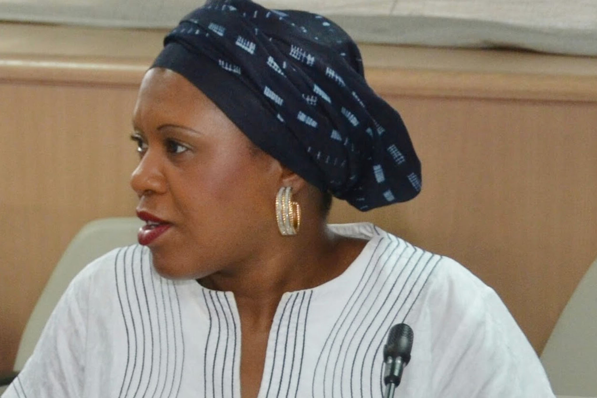
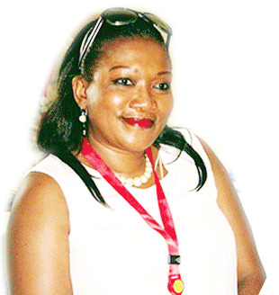

Nous sommes une initiative privée impulsée par la compassion pour les personnes vivant au quotidien une précarité qui ne leur permet pas de répondre á leurs besoins humains les plus élémentaires (physiques, économiques, civils)...
Notre Équipe
NADINE MUTETA
Fondatrice et Preésidente de NUNATU Asbl
Économiste, (Maîtrise en Sciences Économiques et Sociales, Facultés Universitaires Notre Dame de la Paix, Namur, Belgique). Nadine a évolué dans le monde associatif en Belgique et en RDC (Lubumbashi) pour le compte de diverses ONG, essentiellement dans le domaine de l’accès aux services sociaux de base et la réduction de la vulnérabilité; en prônant l’application de l’approche participative et de la dynamique de concertation ainsi que la réinsertion socio-économique des groupes vulnérables (‘Dynamique pour la motivation’, ‘Congo réveil’, ‘OCIV’, ‘FFTB’, ). Elle a travaillé sur des stratégies de réduction de la pauvreté à travers la valorisation et la canalisation des transferts financiers des migrants au profit d'activités génératrices de revenu. Bénévole dans différentes écoles de devoir, Nadine est passionnée par le partage des valeurs et expériences de vie transformatrices.
NICOLE MUTETA
Docteur en Médecine. Spécialiste en Médecine Aigue
PATRICIA KANKU
Fondatrice et Directrice de PDK Business Consulting
LES BÉNÉVOLES
Des bénévoles travaillent avec cette équipe à la réalisation de la mission de NUNATU